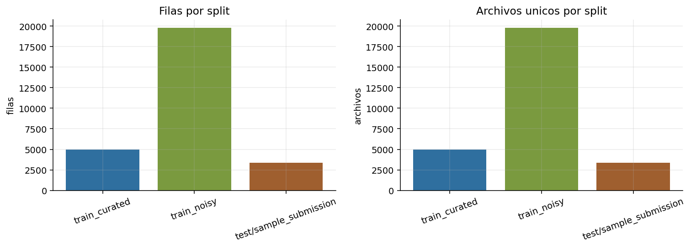
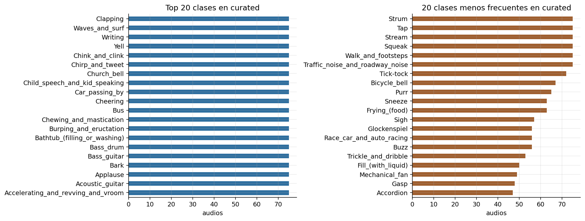
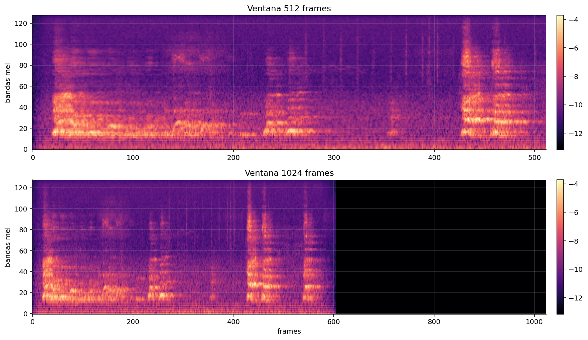
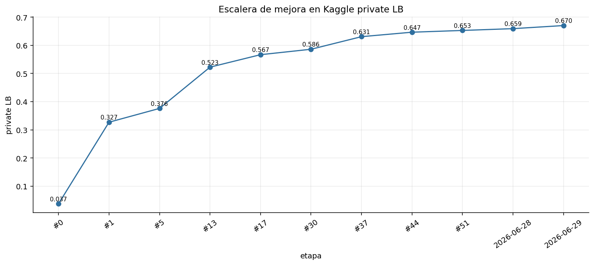
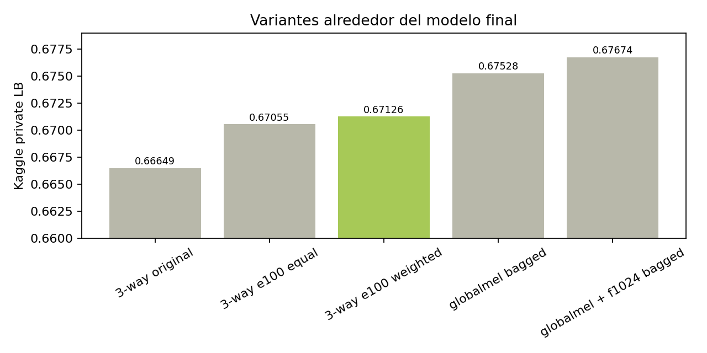

Taller de Aprendizaje Automático
Freesound Audio Tagging
Modelo final de tres ramas log-mel, entrenado a 100 épocas y reponderado para la entrega.
Problema
Audio tagging multi-label
Qué se predice
- Un audio puede contener más de una fuente sonora.
- La salida son 80 probabilidades por archivo.
- La métrica premia el ranking de clases correctas.

Datos
Curado, ruidoso y desbalance

Decisión
- Final entrenado sobre train_curated.
- train_noisy se analizó, pero concatenarlo directo empeoró validación.
- Se descartaron archivos conocidos como problemáticos.
Métrica
lwlrap: ordenar bien las etiquetas
Ranking
Para cada audio importan las posiciones donde caen las clases verdaderas.
Multi-label
Se usan sigmoides independientes y BCE, no softmax excluyente.
Blend
Promediar probabilidades puede mejorar el ranking si las ramas son complementarias.
Preprocesamiento
De forma de onda a imagen log-mel

La CNN ve patrones locales en tiempo y frecuencia: ataques, bandas, ruido broadband y eventos sostenidos.
Representaciones
El salto grande fue conservar el tiempo
Escalera conceptual
- P00 stats log-mel: 0.37607
- P01 imagen 128 x 512: 0.52257
- Entrenamiento CNN refinado: 0.64665
- Global-mel y 1024 frames: hasta 0.67025

Experimentos
Hipótesis que sí movieron la aguja

Lectura
- Tabular sirve como baseline, pero pierde temporalidad.
- CNN log-mel captura estructura tiempo-frecuencia.
- Normalización global y BiGRU agregan diversidad.
- Más complejidad solo entra si se puede defender.
Modelo final
Tres ramas, un blend simple
CNN separable-residual con cabeza densa sobre log-mel 128 x 512.
0.25Patrones locales tiempo-frecuencia.
CNN separable-residual + BiGRU con normalización global por banda Mel.
0.375Escala estable y evolución temporal.
CNN separable-residual + BiGRU sobre ventana temporal 1024.
0.375Contexto temporal largo.
Entrenamiento
100 épocas con regularización repartida
Dentro del modelo
- BatchNorm en bloques convolucionales.
- head_dropout = 0.3 en las tres ramas.
- BiGRU en las dos ramas temporales.
Durante entrenamiento
- SpecAugment: shift, máscara temporal y frecuencia.
- AdamW con weight decay en ramas temporales.
- BCEWithLogitsLoss con pos_weight por clase.
Selección final
Por qué entregamos 0.67126

Decisión
- 3-way e100 weighted: 0.67126.
- Mejor experimento: 0.67674.
- No se elige el mejor score porque agrega bagging interno en ramas temporales.
Entrega reproducible
Notebook final ejecutable
Modo liviano
- Recompone el blend oficial.
- Valida columnas, filas, rango y SHA.
- Genera submission.csv.
Modo pesado
- Reconstruye caches log-mel.
- Entrena las tres ramas a 100 épocas.
- Deja modelos y predicciones por componente.
Conclusión
La mejora vino de preservar estructura y sumar diversidad controlada
Representación
Log-mel como imagen fue el salto principal.
Modelo
Tres ramas con sesgos físicos claros.
Entrega
0.67126, simple y defendible frente al bagging.